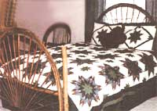
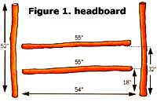
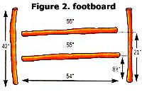
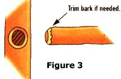
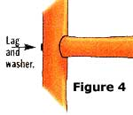
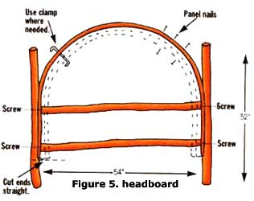
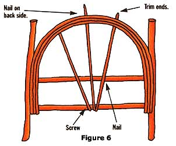
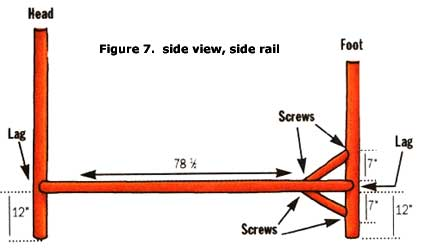
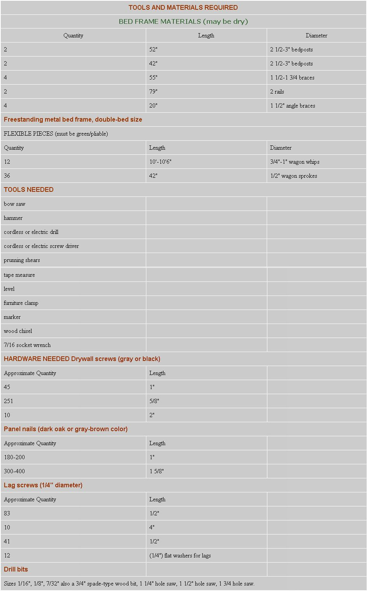

My Labrador and I have gone out to gather willows from our willow patch in every season. Rain or shine, we get together a sack lunch, boots, insect repellent, a saw, and pruning shears, and head for the patch. Here in Wyoming, one of the most abundant willows is called sandbar willow, and we find it growing in river bottoms, along irrigation ditches, and in areas with fluctuating water levels. Every trip offers a new adventure. During the spring and summer months, deer and upland game birds find a comfortable bed within the shade of the willows. As we selectively cut, we open new trails for these deer to follow. My most memorable wildlife encounters throughout the years have been with shade-seeking prairie rattlesnakes, skunks, and (my dog's least favorite) the porcupine family. Summer outings may also include waist-high damp grasses, a haven for mosquitoes, and other flying, biting pests. Now you know the reason for the boots and insect repellent.
Many species of willows grow in bottom lands throughout the U.S. Most willows readily resprout, making them a renewable resource, and offer a unique building material. When green or freshly cut, they are very pliable and can be bent to form artistic curves. Larger diameter pieces will dry into sturdy frames. I started working with willow by constructing relatively simple projects like plant stands and shelves. Once you have a feel for bending willow, you can have the satisfaction of constructing something a bit more grand, such as this rustic double bed. I'll walk you through it.
First of all, when gathering in the late spring or early summer, let the materials sit a week or two prior to use. You'll find a lot of moisture between the bark and inner core during these growing periods. Without some drying time, the bark may split while bending. This rule does not apply to the larger diameter pieces used for the frames. You won't be bending these frame willows, so you can use them immediately, or cut and store them.
Select insect-free pieces that appear healthy. The straighter the willow, the easier it will be to build with. When making your cuts in the field, take care not to leave any sharp edges or points to injure wildlife or livestock. And, as always, when you take from nature, do so sparingly and responsibly. If you completely clear your willow patch, you'll change a small ecosystem for the worse. You must also make sure you have permission to gather willows if you are venturing off your own land to find them.
To minimize splitting and cracking of wood, it's important to drill pilot holes before nailing or screwing. A pilot hole is a hole drilled slightly smaller and longer than the nail or screw to be inserted.
Before attaching any willow that requires bending, try the following technique to relax the wood fibers. (This increases flexibility, which enables you to make a more even or uniform curve.) First, place one end of your freshly cut or green willow whip on the floor, grasp the other end with your hand, and bend it a little at a time. The larger willows will require you to actually walk along this bend until flexible. The building instructions will refer to this procedure as "walking the willow." Despite your efforts to increase flexibility, some willows will break during this process. It's essential to cut extra materials for that reason. The material fist on page 29 includes these extra pieces.
As you begin construction, keep in mind you are working with wood that is not exactly straight. There are natural bows and irregularities. Therefore, during construction you should often stand back and view the overall appearance. You'll build the headboard first. Lay the bedposts (52" willows) on the floor or on a large workbench. If posts are bent or curved, simply rotate them until you achieve the position that looks best.
Measure and mark the locations of the horizontal braces (55"). Lay these in their designated positions; again rotate or turn as needed. You will be using a hole saw to countersink these brace ends, so it's important not to change their order once you've established them (see measurements in figures 1 and 2).
You will be countersinking the horizontal brace ends into the bedposts. Use the hole saw that is closest to the size needed. The diameters of the willow pieces will not be exactly the same. Drill the approximate size hole no more than 1/2" deep, at each of the four locations (figure 3). Use a wood chisel or knife to remove some bark off the brace ends to customize the fit, if necessary (figure 3).
When the fitting procedure is complete, drill pilot holes (7/32") through the bedpost into the ends of the braces (figure 4). Use the length lag that best accommodates each joint. To countersink the lag heads, use the 3/4" spade bit drilled 1/4" deep. Insert lag and washer, and tighten until snug.
Repeat the building process for the footboard. Note these measurements are different. Refer to figure 2 for correct measurements.
Stand the headboard and footboard frames upright to check their alignment. If adjustments are needed, first loosen lag screws, reposition, then snug lags again.
Upon completion of the frames, you are ready to create the wagon wheel designs. Begin working with the headboard. "Walk the willow" whip (10'-10'6") to desired flexibility, so it easily forms a curve. Attach each end of whip to headboard frame as shown (figure 5); note the overall height given. Drill pilot (1/8" bit) and use the 1 5/8" screws. This first willow whip will establish the pattern for the others to follow, so make it as well rounded and uniform as possible.
Now add the second whip on the inside of the first one. "Walk the willow," then screw the larger diameter end to the frame, leaving the smaller end free at this time. Working your way around, compress willows together with furniture clamp where needed, drill pilots(1/16 " bit), and hammer in 1 5/8" panel nails every place you need to along the curve, usually 2-3" apart. When you've reached the small end, secure it to bedposts or braces with screws.
Repeat the process above to add one or two more willows to your wagon wheel (dotted line, figure 5). Whip ends may be cut to exact lengths if necessary after attachment.
Follow the same procedure to construct the wagon wheel design on the footboard. Note: Overall height is 42" for footboard.
It's time to add the spokes to your newly created wheels. The spokes radiate from the center of the bottom brace of the frame, so determine the center first. Now, evenly space these 42" willows. The measurements will vary, but spokes should be about 6" apart at their widest points (in order to avoid any choking danger, make the space between spokes narrower still if there are young children in the house). Using this spacing, both the headboard and footboard will have 15-16 spokes. The spokes attach to the two horizontal braces on the front side and to the back side of the wagon wheel design top (figure 6). Drill pilots and insert appropriate-length nails and screws. The willow ends that extend may be cut at any time. Some spokes that are quite long may need to be shortened before attaching them. Repeat above building procedure for the footboard.
Things are really taking shape now. In order to appropriately place the side rails, support the head-and footboards in straight upright positions. A level will assist you. Figure 7 shows locations of side rails. Use hole saw to countersink rail ends; customize fits as needed.
Drill pilots( 7/32") and use desired length lag with washer. These lags will go through the bedpost into the ends of the side rails (figure 7), at all locations. You may countersink lag heads with 3/4" spade bit if desired. To add support to the footboard you will need to make angle braces. These 20" willows were cut extra long to allow for cutting of angles. Locations of these braces are shown in figure 7. Use 1 5/8" or 2" screws to secure these.
Attaching the freestanding metal bed frame is the final step. Your frame may be on wheels or legs. It comes with brackets to attach to a headboard. These brackets vary, but adapter plates are available to make them fit your needs. The metal frame may attach either on the front or back side of the willow headboard posts. Drill pilots and use 1 1/2" lags with washers.
When your willow wood has dried or cured, you may want to apply a penetrating wood oil finish. Since your bed is used indoors, this treatment is optional. The bed in the photo has been oiled, which darkened the wood.
Debbie's willow designs include patterns for a chair, love seat and table as well as the bed shown above. To purchase her booklet of new plans and instructions, send $9.95, plus $2 shipping and handling to: Wyoming Willows, 10 Piper Road, Sheridan, WY 82801.
|
 |
|
 |
|
 |
 |
 |
|
 |
 |
 |
|
 |
|
|